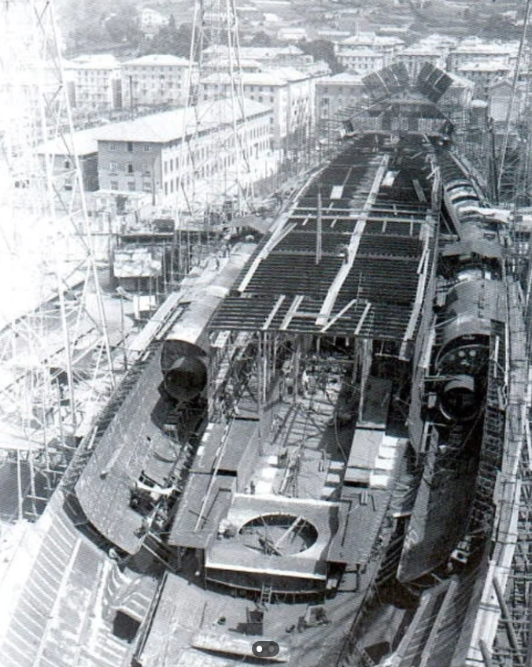
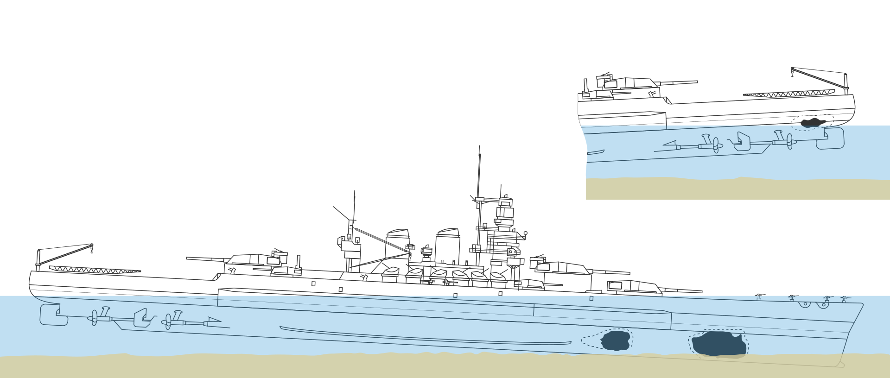
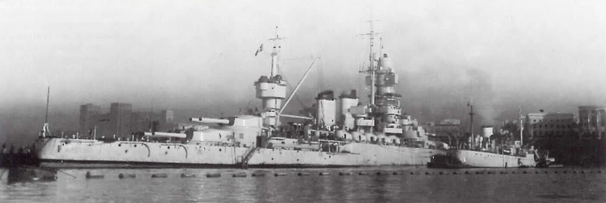
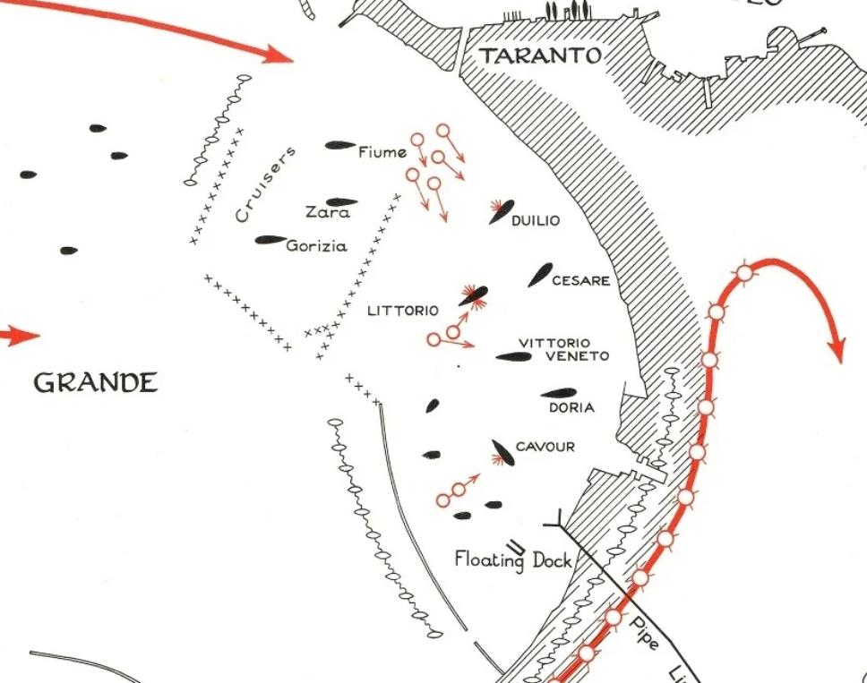
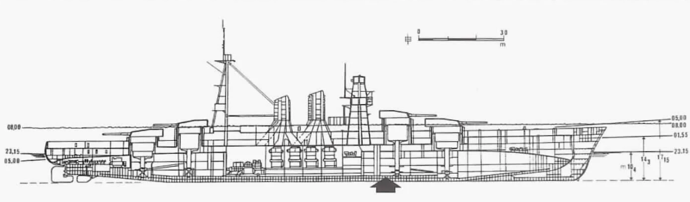
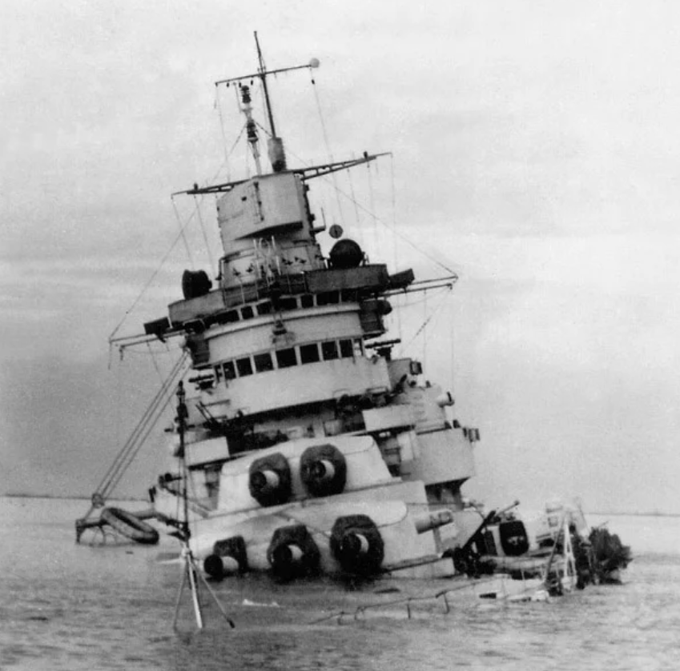
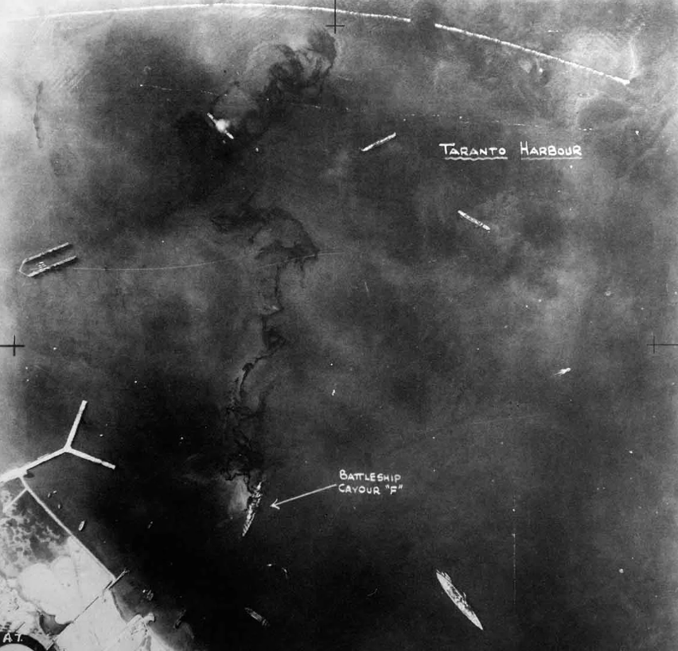

WW2 중 항모에서의 야간 작전 (32) - 3방 vs. 1방
게시: 2025-09-25T06:30:23+09:00
<중상인 줄 알았는데 왜 경상?> 원래 영국해군은 어뢰가 어뢰 방어망 밑으로 통과한 뒤 이탈리아 전함들의 밑바닥에서 자기 감응 신관에 의해 폭발하도록 어뢰의 잠항 심도를 딱 10m에 맞추었었음. 당시 타란토에 계류되어 있던 전함들의 draft (흘수)는 9.7m 정도였으니까 어뢰가 이탈리아 전함들에게 명중한다면 어뢰에 의한 구멍은 모두 함체의 측면이 아니라 바닥에 뚫려야 함. 그런데 리토리오에게 명중되어 폭발한 어뢰 3발은 모두 리토리오 측면에 구멍을 뚫음. 그러니까 소드피쉬들이 너무 느린 속도로 너무 낮은 고도에서 어뢰를 투하했든 어뢰의 잠항 심도 제어 장치 세팅이 잘못되었든, 아무튼 영국해군의 어뢰들은 대부분 의도한 것보다 얕은 심도에서 항진했고, 결국 함체 측면에 부딪힌 뒤 자기/충격 이중 신관(duplex pistol) 중 충격 신관에 의해 기폭된 것. 음? 소드피쉬에서 투하된 어뢰들이 그렇게 8~9m 깊이로 항진했다면 대체 어뢰 방어망은 어떻게 통과한 것일까? 이미 언급했던 것처럼 이탈리아 해군은 각각의 함정별로 어뢰 방어망을 치지 않았고 그냥 전함 계류장 전체를 커다란 규모의 어뢰 방어망으로 둘러쌌음. 그러다보니 소드피쉬들은 모두 어뢰 방어망 밖이 아니라 안쪽에 어뢰를 투하할 수 있었고, 그래서 어뢰 방어망은 아무 역할을 하지 못했던 것. 잠깐, 리토리오에는 나름 첨단 과학으로 설계된 어뢰 방어용 특수 설비인 퓰리에제(Pugliese) 시스템이 있지 않았던가? 있었음. 다만 퓰리에제 시스템도 전함의 집중 방호 구역(citadel)처럼 엔진과 탄약고 같은 중간 부분만을 보호할 뿐, 배의 모양상 좁을 수 밖에 없는 함수와 함미에는 퓰리에제 시스템이 확장되어 있지 않았음.

(이쯤에서 다시 보는 퓰리에제 시스템. 보시다시피 좁은 함수와 함미에는 저런 굵은 튜브가 자리 잡을 공간이 없음) 그런데 지난 번 피격 위치 그림에서 보았듯이, 운이 좋았던 것인지 나빴던 것인지 소드피쉬의 어뢰들은 함수와 함미에만 3방이 폭발함. 그래서 퓰리에제 시스템은 그 방호력을 입증할 기회를 가지지 못했던 것. 그런데 반대로 말하면 퓰리이제 시스템으로 방어할 필요가 없을 정도로 상대적인 중요성이 떨어지는 부분에만 어뢰를 얻어 맞은 것. 다만 맨 처음 함수에 얻어맞았던 어뢰는 내부 격벽까지 뚫어버렸으므로 심한 침수가 발생했고, 그래서 리토리오가 착저했던 것이며, 수리는 상대적으로 빠르게 진행되어 다음 해 3월까지는 모든 수리가 끝남.

(다시 보는 리토리오의 피격 위치)
전함 듈리오(Duilio)는 딱 1방을 맞았고, 리토리오처럼 함체 옆부분에 구멍이 뚫렸으며, 예인선들의 도움을 받아 얕은 모래톱에 일부러 좌초시켜 침몰을 피함. 이 수리는 다음 해 5월까지 모두 어렵지 않게 완료.

(의도적으로 좌초시킨 듈리오의 모습. 모든 구조 노력은 최신예함 리토리오에 집중되었으므로, 이 상태로 임시 수리만 마치고 그 다음해 1월에 다시 띄워진 뒤 시작하여 5월까지 수리가 끝남.)
<빗맞아도 사망> Conte di Cavour급 전함의 nameship인 콘테 디 카부르(2만9천톤, 27노트)는 원래 1911년 진수된 WW1 시절 전함으로서, 1930년대 중반에 대대적인 현대화를 거치기는 했지만 아무래도 이탈리아 해군의 주력함이라고 하기엔 좀 모자른 낡은 전함이었음. 그래서 당연히 영국해군 수뇌부에게도 카부르는 주요 목표물이 아니었음. 그럼에도 불구하고 12기의 어뢰 장착 소드피쉬 중 무려 3기가 이 카부르에게 달려듬. 이유는 딱 하나, 리토리오와 함께, 하필 카부르가 마르 그란데(Mar Grande) 항구 전함 계류장의 가장 바깥쪽에 위치하고 있었기 때문. 지난 편에 언급했듯이, 리토리오에는 5기가 달려들었고 그 중 4발이 명중했는데 (1발은 불발탄), 카부르는 그 와중에도 운이 좋았는지 카부르에게 발사된 어뢰 3발은 모두 빗나감. 그런데 운이 좋았다고는 할 수 없었던 것이, 리토리오급 전함 Vittorio Veneto를 향하여 투하되었던 2발의 어뢰는 모두 빗나갔는데, 그 중 한 발이 엉뚱하게 카부르에게 명중.

(리토리오, 듈리오, 그리고 카부르에게 공격이 집중된 이유는 역시나 '줄을 잘못 섰기 때문'. 북쪽에서 날아든 일부 소드피쉬들이 리토리오와 듈리오를 건너 뛰고 최신예함인 비토리오 베네토를 노렸는데, 그 중 1발이 빗나간 뒤 카부르를 때린 것.)
앞서 리토리오에 명중한 어뢰들은 모두 영국해군의 의도보다 얕은 수심으로 달렸기 때문에 리토리오의 함체에 구멍을 뚫었다고 했는데, 이날 명중한 어뢰들 중 유일하게 제대로 된 깊이로 달렸던 한 발이 바로 비토리오 베네토를 노렸다가 빗나간 뒤 카부르에게 명중한 어뢰였음. 카부르에게 명중한 어뢰는 정확하게 B-turret, 그러니까 앞에서 2번째 포탑 아래의 함저에 커다란 구멍을 뚫어놓음. 이건 명백하게 duplex pistol 중 자기 신관에 의해 기폭된 것.

(카부르의 피해. B-터릿 밑의 함저에 커다랗게 구멍이 뚫림)
카부르에도 최신식 퓰리에제(Pugliese) 시스템까지는 아니더라도, torpedo blister 즉 어뢰 방어용 벌지(bulge)가 장착되어 있었으므로 만약 이 어뢰가 다른 어뢰들처럼 8~9m 깊이로 항진하여 카부르의 측면을 때렸다면 어뢰 방어용 벌지만 터뜨리고 전함 본체에는 큰 피해를 내지 못했을 수도 있음. 그런데 아무런 장갑이나 어뢰 방어용 벌지로 보호를 받지 못하는 함체 바닥 밑에서 폭발한 어뢰는 딱 1발인데도 불구하고 깜짝 놀랄 정도의 피해를 입혔음. 그 폭발은 일단 바닥 부분에서 완충 장치 역할도 할 겸 위치시켜 놓았던 연료 탱크 2개를 터뜨렸을 뿐만 아니라 그 내부 격벽도 완전히 뚫어 버림. 그러면서 2개의 커다란 방수 구역을 한꺼번에 침수시켜 버렸으므로 카부르는 빠르게 가라앉기 시작. 더 나쁜 것은 이 폭발에 의해 카부르 전체에 정전이 발생했다는 것. 카부르의 함장은 사태의 심각함을 깨닫고 예인선으로 카부르를 근처에 있던 얕은 모래톱에 좌초시켜달라고 함대 사령관 브리보네시(Bruno Brivonesi)에게 요청. 그러나 함대 사령관은 분위기 파악을 못하고 그 요청을 처음엔 거부. 결국 점점 가라앉는 카부르의 모습을 보고서야 예인선을 보내주었는데, 이미 때가 늦어 결국 카부르는 더 깊은 모래톱에 좌초되었고, 그래서 갑판 전체가 침수되어 버림.

(카부르의 모습. 이 정도면 사실상 격침된 것.)

(더 해안가에 가까운 얕은 모래톱에 좌초시키려 했으나 저렇게 어정쩡한 위치에서 착저됨. 함 왼쪽에 부옇게 보이는 것은 연료 누출 때문.)
이후 카부르는 구조 및 수리 활동에 있어서 가장 후순위로 밀림. 비교적 깊은 곳에 가라앉았을 뿐만 아니라 용골 부분의 파손도 심한데다가, 아무래도 낡은 전함이었기 때문. 몇 개월 뒤에야 구조 작업이 시작되어 먼저 주포 등 무거운 부품들을 떼어내고 함저의 구멍을 철판으로 막은 뒤 펌프로 1달 동안 1만5천톤의 물을 퍼내어 다음 해 6월에야 물 위로 띄우는데 성공. 이렇게 띄운 카부르는 부유식 드라이도크에 일단 올려놓았는데, 그 뒤에 조사를 해보니 생각보다 파손이 심하여 제대로 된 정비창인 이탈리아 북동부 항구 트리에스테(Trieste)로 보낼 수가 없었음. 거기로 보내기 위한 임시 수리를 하는 것에만도 6개월이 더 걸림. 결국 트리에스테로 가긴 했으나, 전기 계통의 문제 등 수리에 있어 여러가지 난관이 있었기 때문에 결국 이탈리아가 연합군에게 항복할 때까지도 수리가 끝나지 않음. 그 상태로 종전을 맞이했고 이후 고철 처리됨.